본문 바로가기
어린이박물관
박물관탐방
e뮤지엄
문화상품점
웹진'뮤진'
청년멘토
탑메뉴
로그인
회원가입
사이트맵
언어선택
언어선택
Language
English
日本語
中文
검색
전시관람
전시해설
예약·예매
관람·편의시설
오시는길
자주하는질문
상설전시
특별전시
우리문화재국외전시
소속국립박물관전시
전시도록
외국박물관소장한국문화재
교육신청
교육자료
교육소식
이러닝
문화행사
학술행사
큐레이터추천소장품
주요소장품검색
국보·보물검색
디지털탑본
소장품3D보기
수어동영상
소장품열람·복제
문화재기증안내
정기간행물
고고학
역사학
미술사학
아시아학
보존과학
외규장각의궤원문
일제강점기조사자료
도서관
기타
소식
자원봉사안내
학예사자격증안내
전자민원
정보공개
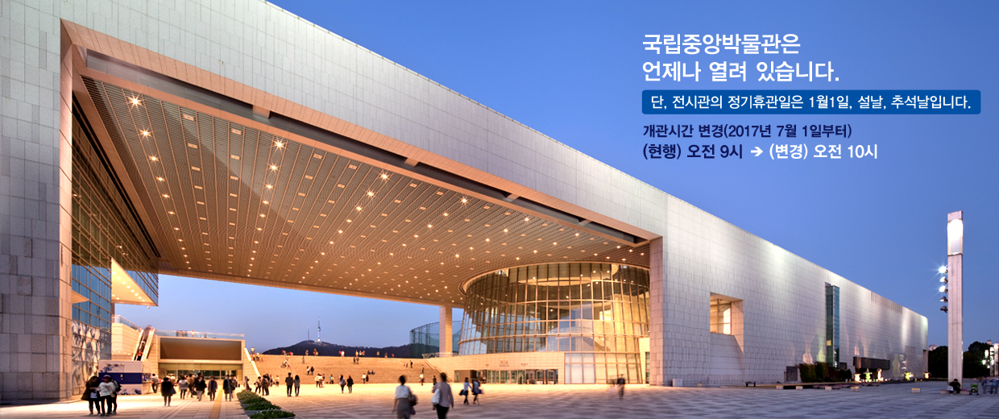
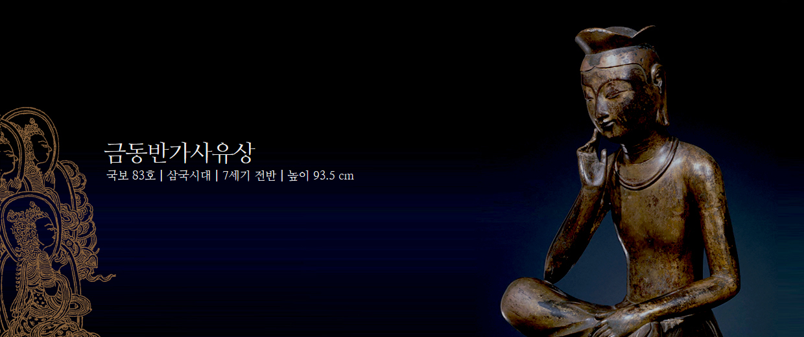
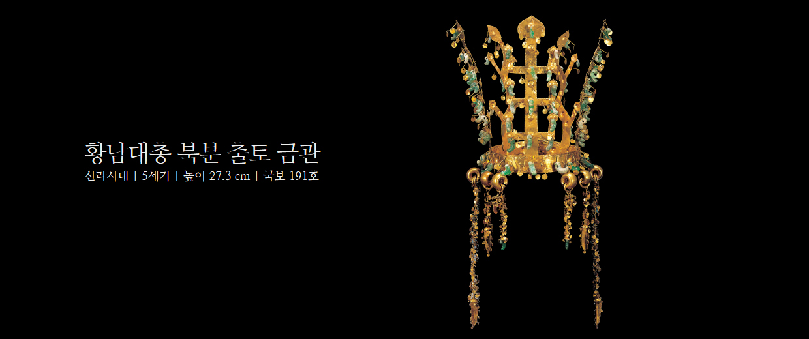
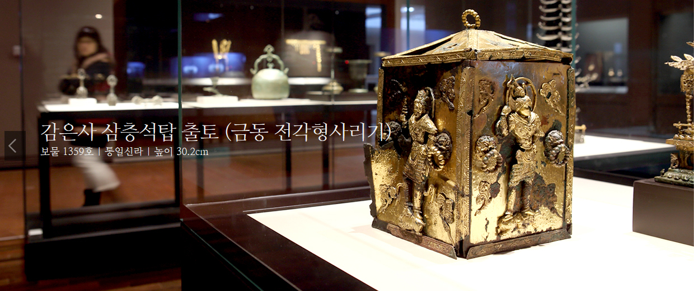
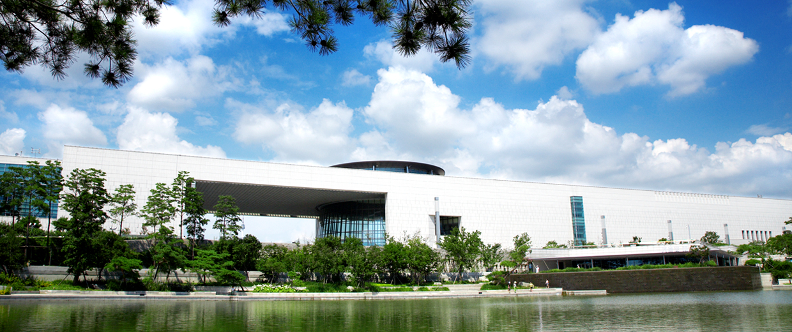
관람시간
월 · 화 · 목 · 금요일
09:00~18:00
수 · 토요일
09:00~21:00
일요일 · 공휴일
09:00~19:00
휴관일
1월1일,설날,추석날
더보기
오늘의 일정
예약·예매
상설전시
오시는길
큐레이터 추천 소장품
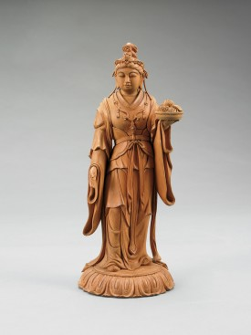
다카무라 고운(高村光雲)의 기예천 (伎藝天)
교육
2017-04-24~2017-04-24
(야간개장)나전공예체험(4월)
내용: 전시품 설명 및 나전공예 제작과정 체험
대상: 성인, 직장인 등
행사
루도비코 에이나우디-Elements Tour in Seoul
국립중앙박물관 극장 용
2017-04-18 ~2017-04-19
뮤지컬 프리파라
국립중앙박물관 극장 용
2017-01-25 ~2017-02-26
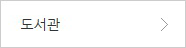
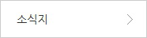
알림,고시/공고,채용안내,보도자료
분신물 정보 안내
2017년 국립중앙박물관 보존과학 기초연수 대상자 알림
4/17(월) 임시 휴실 안내:선사고대관 백제실
2017년 국립중앙박물관 모니터링단 선정결과 발표
매달 마지막 수요일은'문화가 있는 날'!
국립중앙박물관 일본실 상설전시 정기 교체
더보기
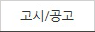
테마전 '고성 옥천사 괘불' 전시도록 위탁 재공고문
테마전 '고성 옥천사 괘불' 전시도록 위탁 공고문
테마전 "옛 중국인의 생활과 공예품" 전시도록 위탁 공고
2017년 상반기 박물관·미술관 학예사 자격증 및 경력인정대상기…
2016년 하반기 박물관ㆍ미술관 학예사 자격증 및 경력인정대상…
“2016년도 국립중앙박물관 전시실 전시환경 개선사업” 전시진…
더보기
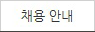
국립중앙박물관 관리과 기간제근로자(관엽식물관리원) 채용시험…
국립중앙박물관 고객지원팀(일본어, 수어 안내) 기간제 근로자…
국립중앙박물관 고고역사부 기간제 근로자 최종 합격자 공고
국립중앙박물관 관리과 기간제근로자(관엽식물관리원) 서류전형…
국립중앙박물관 전시과 기간제근로자 채용 공고
국립중앙박물관 보존과학부 기간제근로자 채용 공고
더보기
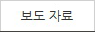
[국립광주박물관] 유아 단체 대상 창의예술교육 운영 “쏙! 문화…
국립중앙박물관 일본실 상설전시 정기 교체 -조선통신사가 지나…
[국립춘천박물관] 미래未來! 곧 다가 올 역사歷史 -국립춘천박물…
[국립춘천박물관] "학수고대鶴首苦待, 새로운 전시를 기다림" …
[국립광주박물관] 상설전시 <신안실> 개실
[국립춘천박물관] 삼척 흥전리(興田里)터 비편 등 통일신라시대…
더보기
팝업존
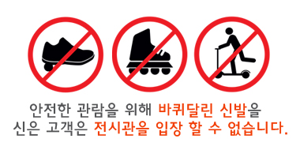
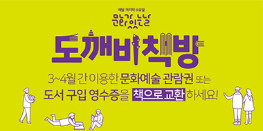
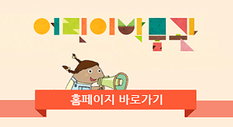
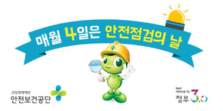
daum 블로그
naver blog
youtube
twitter
facebook
Instagram
관련사이트배너
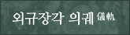